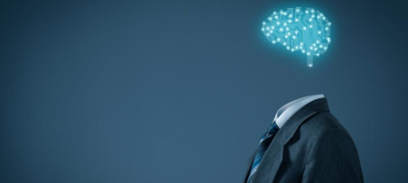
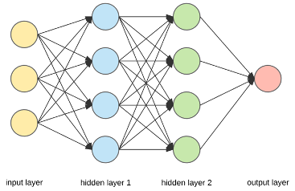
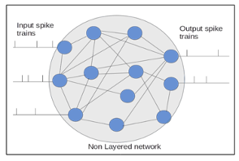
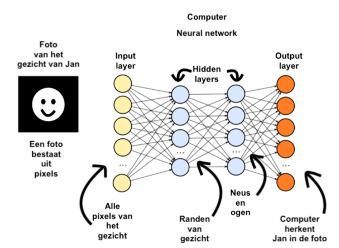
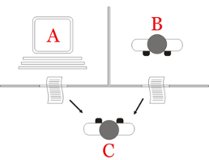

Kunstmatige intelligentie komt tegenwoordig veel voor zonder dat men dat door heeft. Wat houdt dit vakgebied in en waarom is het zo populair onder bedrijven? Kunstmatige intelligentie is een vrij groot begrip. Uiteindelijk komt het neer op technologie, maar ook daar komt eerst nog veel bij kijken zoals; Computerwetenschap, psychologie, filosofie en taalkunde. Kunstmatige intelligentie is het systeem in apparatuur dat er voor zorgt dat er geleerd wordt van data en impulsen die hij ontvangt uit zijn omgeving. Die data en impulsen slaat het apparaat op in een database. Daarvan kan het apparaat leren en zichzelf verbeteren. Het uiteindelijke doel is dat het apparaat de juiste keuzes maakt om zo het goede resultaat te behalen. Het uiteindelijke doel is dat de apparatuur werkt zoals een mens.
Kunstmatige intelligentie (KI) kan je opdelen in zwakke en sterke kunstmatige intelligentie.
Intelligente software die maar één specifiek probleem goed kan oplossen noem je zwakke KI.
Deze vorm richt zich op 1 onderwerp en probeert zich daar zo goed mogelijk in te ontwikkelen.
Uiteindelijk kan de geoptimaliseerde algoritmen het probleem zo goed mogelijk benaderen en oplossen.
Vaak wordt zwakke KI gebruikt om grote pakketten data in bruikbare informatie om te zetten.
Een bedrijf verzamelt allemaal info over het desbetreffende persoon, kunstmatige intelligentie gaat daar overheen en zorgt dat het bruikbare informatie wordt.
Vervolgens kan het bedrijf daarmee doelgerichte advertenties maken of aanbevolen producten weergeven.
Andere voorbeelden van zwakke KI zijn iOS Siri, Google Assistant of Alexa. Een automatische telefoonbeantwoorder is ook een vorm van kunstmatige intelligentie.
In vergelijking met sterke KI is zwakke KI niet intelligent maar gedraagt zich intelligent.
Sterke KI houdt zich bezig met het onderzoek met betrekking tot het creëren van software die problemen kan oplossen waarbij ze zich ook bewust zijn van hun eigen identiteit.
Deze KI richt zich meer op het menselijke gedeelte. Daarom valt sterke kI ook onder te verdelen in twee subgroepen.
Human-like KI en non-human-like KI. Human-like KI denkt en lost problemen op zoals een mens terwijl non-human-like AI een niet menselijke computer intelligentie ontwikkelt.
Sterke KI kan je als brein zien.
Terwijl zwakke KI alleen onafhankelijke keuzes kan maken.

Er bestaat ook nog kunstmatige superintelligentie. Dit gaat verder dan het menselijke brein.
Zulke machines zijn het menselijke brein altijd voor. Maar je kan toch gewoon de stekker eruit trekken?
Nee, want voordat jij je dat kan bedenken heeft de machine al een oplossing. Althans dit is de gedachtegang van veel onderzoekers.
Complotdenkers denken er vaak anders over. Een voorbeeld van superintelligentie is er nog niet maar veel onderzoekers houden zich er al wel mee bezig.
Wat mag en kan superintelligentie wel en niet? Het zou namelijk mogelijk zijn om een massa moordende robot te maken. Een killer drone bijvoorbeeld.
Die doelgericht mensen aanvalt.
Kunstmatige intelligentie zal een grotere rol gaan spelen in de toekomst. Vooral zwakke kI is erg populair.
 Alle neurale netwerken bestaan uit een collectie van kunstmatige neuronen. Neurale netwerken zijn verschillende algoritmes die data onderscheiden in verschillende groepen. Dit wordt gedaan met layers. Je hebt een input layer, hidden layers en een output layer. De invoer gaat in de input layer, door de hidden layers en uiteindelijk komt de informatie uit bij de output layer. Vaak gebruiken neurale netwerken niet meer dan 2 hidden layers. Hoe meer hidden layers gebruikt worden hoe langer het duurt voordat de data bij de output layer komt.
In de neurale netwerken worden de signalen doorgegeven met neuronen. Deze neuronen zijn georganiseerd in meerdere lagen. De input layer, hidden layer(s) en de output layer.
De neuronen kunnen alleen met de eerst volgende/vorige verbinden. De laag die de externe gegevens ontvangt is de input layer en de output layer is de laag die de uiteindelijke definitieve uitslag geeft.
Tussen de neuronen die van laag naar laag gaan kan veel verschillen.
Je kunt bijvoorbeeld hebben dat iedere neuron verbindt met alle andere neuronen in de volgende laag. Maar ook kan er “pooling” plaatsvinden.
Bij pooling zijn er meerdere Neuronen uit de eerste laag die allemaal verbinden naar 1 neuron in de tweede laag, daarbij verkleint het dus het aantal opties dat mogelijk is voor bijvoorbeeld het herkennen van een letter.
De grootte van de layers wordt bepaald door de hoeveelheid layers daarvoor en natuurlijk het aantal layers in totaal.

Ook zijn er twee soorten netwerken layered en unlayered.
Layered is een netwerk die je ook in het plaatje ziet, eentje met meerdere lagen waar de neuronen van laag naar laag georganiseerd bij het eindpunt komen, de output layer.
Maar een unlayered netwerk ziet er heel anders uit. Ze hebben geen structuur, alle neuronen kunnen met elkaar verbonden worden.
De gebruiken van dit zo’n netwerk heeft alle controle over welk neuron waar naar toe verbindt en of het een input of output neuron is.
Nodes, oftewel neuronen zijn de basis van het alle netwerken. Neuronen onthouden namelijk de data en kunnen dat linken naar andere neuronen. Een simpel voorbeeld: het herkennen van een cijfer. Denk maar dat een neuron iets is wat een nummer onthoudt, specifiek een nummer tussen 0 en 1. Het neurale netwerk begint met een aantal neuronen die overeenkomend zijn met het aantal pixels bijvoorbeeld 30x30 van de input image (afbeelding). In totaal zijn dat er 900 en ieder van die neuronen bevat een nummer die de waarde van kleur in de afbeelding representeert, waarbij 1 helemaal wit is en 0 zwart. Het nummertje in de neuron wordt de activatie genoemd. dus al deze 900 neuronen maken de eerste layer van ons neurale netwerk, de input layer. Neuronen zijn dus in principe kleine databases die met andere neuronen kunnen linken om een kans te determineren.
Spiking neural networks zijn gebaseerd op de originele biologische neurale netwerken. Deze spiking neural networks kunnen wel de toekomst van deep learning worden. Uiteindelijk kan het brein in beperkte mate nog steeds sneller informatie registeren als een computer. De naam spiking komt doordat veel neuronen op hetzelfde moment met elkaar reageren en interactie met elkaar ondernemen. Maar een spike van reacties is nog niet genoeg voor een spiking neural network. Je hebt daarvoor een Spiketrain nodig. Meerdere neuronen die informatie doorgeven, dat vervolgens wordt vernomen als informatie in de output spike. Al deze spikes zijn dus neuronen die op dat moment zijn opengezet om te reageren op dat specifieke moment. Door spiking wordt het verwerken van informatie versnelt.
Alle informatie die een slimme machine ophaalt moet worden opgeslagen. Dat kan in een database. Een voorbeeld van een database is MySQL. Later kunnen ze die data weer bekijken en gebruiken voor bijvoorbeeld het juiste antwoord. De laatste jaren is het opslaan van data exponentieel gegroeid. Het opslaan van data was in 1980 pakweg 6 miljoen keer duurder dan vandaag. Dit geeft een mooi voorbeeld van de ontwikkeling van techniek achter computers.
Kunstmatige intelligentie maakt gebruik van algoritmes om tot conclusies te komen.
Met algoritmes heeft iedereen te maken.
YouTube maakt bijvoorbeeld gebruik van algoritmes om aanbevolen video’s voor een specifieke gebruiker weer te geven.
Een algoritme staat gelijk aan een wiskundige formule. Vanuit programmeertaal gezien is het een instructie, een stuk code, om een probleem op te lossen.
Algoritmes zijn voor veel dingen te gebruiken. Zo kan een algoritme muziek maken, maar ook nepnieuws opsporen. Algoritmes maakt complexere dingen eenvoudiger.
Het oplossen van y = a^2 + c256 - sin(256a + 30) door een algoritme geeft binnen enkele seconden al een uitkomst terwijl een menselijk brein hier veel langer over zou doen.
Toch zitten er ook risico’s aan algoritmes. Het houdt namelijk geen rekening met de privacy van de mens en kan ook discriminerend te werk gaan.
Zo blijkt uit het onderzoek van Universiteit Utrecht. Zonder data kan een algoritme geen conclusies trekken.
Daarom is er veel te doen over het opslaan van gebruikersdata. Data is namelijk geld waard.
Bron: https://www.uu.nl/sites/default/files/rebo-montaigne-algoritmes_en_grondrechten.pdf
Machine learning is een onderdeel van artificial intelligence dat ervoor zorgt dat apparatuur op zichzelf kan leren en zijn algoritmen kan verbeteren zonder dat de mens daarbij hoeft te helpen. De software wordt betere naarmate de machine zijn taak vaker uitvoert. Er zijn meerdere vormen van machine learning.
Machine learning berust op statische wetenschappen en is onder te verdelen in supervised en unsupervised learning.
Mocht een programma een input en een voorbeeld van een output dan is het supervised. Een persoon vertelt het algoritme waar hij naar moet zoeken.
Uiteindelijke leer het zichzelf ook verbeteren op bepaalde gebieden. Het duurt vaak lang voordat software zo ver ontwikkelt is dat het op zichzelf kan werken.
Een voorbeeld is het maken van een deepfake. Een deepfake is dat je mensen iets kan laten zeggen zonder dat ze dat ooit gezegd hebben.
Het is een tijdrovend proces en kan lang duren als je niet de juiste uitrusting ervoor hebt. Het vergt een computer met een snelle verwerkingstijd en veel rekencapaciteit.
Unsupervised learning houdt in dat je de software een input geeft en hij zelf aan de slag mag gaan.
Het algoritme moet gemaakt zijn maar verder hoeft niemand het algoritme iets te vertellen.
Unsupervised learning laat alle data door een zeef gaan en zoekt daarin patronen en verbind deze met elkaar.
Unsupervised learning wordt vaak ingezet om onregelmatigheden in data te ontdekken.
Supervised learning is accuraat. Maar kan lang duren en vrij complex zijn.
Unsupervised learning is minder accuraat en gaat een stuk sneller.
Deep learning (DL), ook bekend als deep structured learning, is een vorm van unsupervised learning en is gebaseerd op meerlaagse neurale netwerken.
Een simpel maar veel voorkomend voorbeeld is het ordenen van foto’s in je fotobibliotheek door middel van gezichten.
Deep learning kan je ook weer opdelen in verschillende vormen. Gecontroleerde, ongecontroleerde en semi-gecontroleerde deep learning.
Bij gecontroleerde DL krijgt het programma een input en voorbeeld van een output. De machine leert dus aan de hand van het voorbeeld.
Bij ongecontroleerde DL krijgt het algoritme geen voorbeeld van een output. Het algoritme gaat dus zelf aan de slag met zijn algoritme.
Semi-gecontroleerde DL zit tussen gecontroleerde en ongecontroleerde DL in.

Wij, als mens, herkennen gezichten direct. Maar een computer zonder kennis weet niet dat het een gezicht is. Dat moet de computer eerst leren.
Deep learning maakt daarom onderscheidt door middel van layers. Als voorbeeld een foto van een gezicht; Het gezicht splits DL op in 4 lagen.
De eerste laag bevat alle pixels van het gezicht. De tweede laag bevat alle pixels van de randen van het gezicht. De derde laag de neus en ogen.
En de vierde laag herkent dat het een gezicht is.
Statistical learning of te wel statistisch leren is pixelwerk in het grote machine learning. Deze vorm van learning zorgt er voor dat de AI een predictie kan maken op basis van de informatie die hij op dat moment bezit. Statistical learning wordt daarbij dus bijvoorbeeld gebruikt bij bijvoorbeeld stemherkenning. Omdat hij is ingesteld wat de juiste stem is en hij die heel nauwkeurig kan noteren en onthouden door de geluidsgolven. Deze zal het dan opslaan in zijn geheugen en zodra het dezelfde geluidsgolven hoort zal het apparaat ze herkennen.
Reinforcement learning (RL) is een onderdeel van machine learning dat werkt met trial and error structuur.
Reinforcement learning valt onder unsupervised learning. Het algoritme maakt een reeks aan beslissingen zonder dat de mens daarvoor nodig is.
Mocht het algoritme verder komen dan ziet het programma dat als beloning en weet het dat die reeks van beslissingen herhaalt moeten worden.
Dit kan vaak lang duren voordat zo’n algoritme dat door heeft.
Bekijk deze video om een beter beeld te krijgen van reinforcement learning en het proces daarvan.
De Turing test is een experiment opgezet door Alan Turing in 1936.

Dit experiment is opgericht om te controleren of een mens het verschil kan herkennen tussen een computer en een echt mens.
Persoon C praat tegen Computer A en een ander persoon B. De taak van persoon C is om erachter te komen of hij tegen een computer of tegen een persoon praat.
Dat doet hij of zij door middel van een aantal vragen. De computer probeert daarbij te reageren alsof het een echt mens is.
Als de computer de Turing test doorstaat is het dus niet van een mens te onderscheiden. Dat betekent nog niet dat we ons zorgen moeten maken.
De Turing test is namelijk geen waterdicht experiment. Algoritmes vandaag de dag kunnen de turing test verslaan.
Een programma genaamd Eugene Goostman stimuleerde een 13 jarige jongen en wist daarmee 33 rechters ervan te overtuigen dat het een echt mens was.